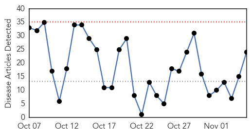
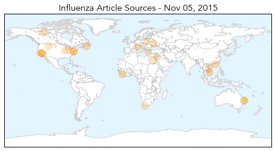
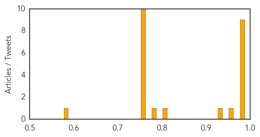

Meningitis
30-Day Web Trend
0 alerts, 0 warnings

30-Day Twitter Trend
5 alerts, 0 warnings

Article Locations

Article Confidences

Top Articles:
- 0.942
- Public health work kept meningitis tragedy from spreading
- 0.920
- School in Dubai denies child died due to meningitis
- 0.874
- Dubai Health Authority issues statement on meningitis
- 0.866
- Facing Alarming Rise in Tuberculosis, Santa Barbara County’s Control Efforts Shift to Latent Cases
- 0.857
- Dubai authorities rule out meningitis in death of school pupil
- 0.820
- Dubai is free from any cases of meningococcal meningitis, DHA says
- 0.815
- Bacteria scare at KPH
- 0.805
- JamaicaObserver.com
- 0.759
- Dubai has no case of meningitis, DHA says
- 0.698
- No confirmed meningitis cases in Dubai
- 0.690
- Elementary student diagnosed with viral meningitis
Top Tweets:
-
No tweets found for Nov 05, 2015
Influenza
30-Day Web Trend
0 alerts, 0 warnings

30-Day Twitter Trend
2 alerts, 0 warnings

Article Locations
Article Confidences
Top Articles:
- 0.999
- Santa Clara County resident is California's first flu-related death this season
- 0.999
- Flu-related death reported in Santa Clara County
- 0.993
- How Vietnam Mastered Infectious Disease Control — NOVA Next
- 0.993
- First Case of Flu in Maryland is Confirmed
- 0.992
- Flu Season Has Started Slowly but Surely
- 0.989
- Stronger flu vaccine on offer in 2016 following record number of cases
- 0.987
- Flu has arrived in Cape Breton
- 0.983
- Confronting Dangerous Viruses is Alumna's Mission
- 0.978
- California's first flu death of season reported in Santa Clara County
- 0.963
- Govt to roll out stronger flu jab in 2016
- 0.930
- 2015 flu vaccine better than last year's, says N.W.T. health official
- 0.808
- ESCMID, ESWI call for increased flu vaccination coverage amongst healthcare professionals
- 0.799
- Aussies set unwanted flu record
- 0.751
- November 5, 2015 Archives
- 0.751
- November 5, 2015 Archives
- 0.751
- November 5, 2015 Archives
- 0.751
- November 5, 2015 Archives
- 0.751
- November 5, 2015 Archives
- 0.751
- November 5, 2015 Archives
- 0.751
- November 5, 2015 Archives
- 0.751
- November 5, 2015 Archives
- 0.751
- November 5, 2015 Archives
- 0.751
- November 4, 2015 Archives
- 0.587
- Researchers identify essential component of antiviral defense
Top Tweets:
-
No tweets found for Nov 05, 2015